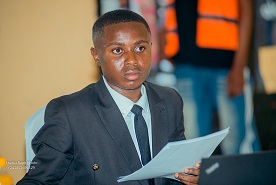

Passionné par le développement web, les bases de données, le design graphique et les technologies numériques.
Me contacterJe suis Abel Koyakele Koto, étudiant en Master passionné par l'informatique, le développement web et le design graphique. Grâce à mes études et à mes projets universitaires, j'ai acquis des compétences en HTML, CSS, JavaScript, PHP, MySQL, conception de bases de données, graphisme et montage vidéo.
Création d'un site web dynamique utilisant HTML, CSS, PHP et MySQL.
Conception et modélisation d'un système d'information pour un projet universitaire.
Création d'affiches, flyers et contenus pour les réseaux sociaux.
📍 Kinshasa, RDC
📞 +243 818 779 217
Discuter sur WhatsApp📧 abelkoyakelekoto@gmail.com